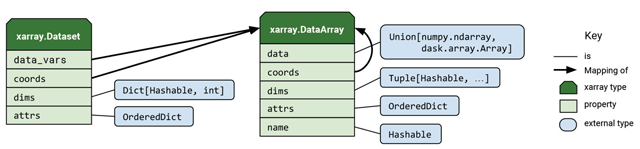

Data Structures
- xarray has 2 fundamental data structures:
DataArray, which holds single multi-dimensional variables and its coordinatesDataset, which holds multiple variables that potentially share the same coordinates

DataArray
The DataArray is xarray’s implementation of a labeled, multi-dimensional array. It has several key properties:
| Attribute | Description |
|---|---|
data |
numpy.ndarray or dask.array holding the array’s values. |
dims |
dimension names for each axis. For example:(x, y, z) (lat, lon, time). |
coords |
a dict-like container of arrays (coordinates) that label each point (e.g., 1-dimensional arrays of numbers, datetime objects or strings) |
attrs |
an OrderedDict to hold arbitrary attributes/metadata (such as units) |
name |
an arbitrary name of the array |
# Import packages
import numpy as np
import xarray as xr
# Create some sample data
data = 2 + 6 * np.random.exponential(size=(5, 3, 4))
data
To create a basic DataArray, you can pass this numpy array of random data to xr.DataArray
prec = xr.DataArray(data)
prec
NOTE:
Xarray automatically generates some basic dimension names for us.
You can also pass in your own dimension names and coordinate values:
# Use pandas to create an array of datetimes
import pandas as pd
times = pd.date_range('2019-04-01', periods=5)
times
# Use numpy to create array of longitude and latitude values
lons = np.linspace(-150, -60, 4)
lats = np.linspace(10, 80, 3)
lons, lats
coords = {'time': times, 'lat': lats, 'lon': lons}
dims = ['time', 'lat', 'lon']
# Add name, coords, dims to our data
prec = xr.DataArray(data, dims=dims, coords=coords, name='prec')
prec
This is already improved upon from the original numpy array, because we have names for each of the dimensions (or axis in NumPy parlance).
We can also add attributes to an existing DataArray:
prec.attrs['units'] = 'mm'
prec.attrs['standard_name'] = 'precipitation'
prec
Dataset
- Xarray’s
Datasetis a dict-like container of labeled arrays (DataArrays) with aligned dimensions. - It is designed as an in-memory representation of a netCDF dataset. - In addition to the dict-like interface of the dataset itself, which can be used to access any
DataArrayin aDataset. Datasets have the following key properties:
| Attribute | Description |
|---|---|
data_vars |
OrderedDict of DataArray objects corresponding to data variables. |
dims |
dictionary mapping from dimension names to the fixed length of each dimension (e.g., {lat: 6, lon: 6, time: 8}). |
coords |
a dict-like container of arrays (coordinates) that label each point (e.g., 1-dimensional arrays of numbers, datetime objects or strings) |
attrs |
OrderedDict to hold arbitrary metadata pertaining to the dataset. |
name |
an arbitrary name of the dataset |
- DataArray objects inside a Dataset may have any number of dimensions but are presumed to share a common coordinate system.
- Coordinates can also have any number of dimensions but denote constant/independent quantities, unlike the varying/dependent quantities that belong in data.
To create a Dataset from scratch, we need to supply dictionaries for any variables (data_vars), coordinates (coords) and attributes (attrs):
dset = xr.Dataset({'precipitation' : prec})
dset
Let’s add some toy temperature data array to this existing dataset:
temp_data = 283 + 5 * np.random.randn(5, 3, 4)
temp = xr.DataArray(data=temp_data, dims=['time', 'lat', 'lon'],
coords={'time': times, 'lat': lats, 'lon': lons},
name='temp',
attrs={'standard_name': 'air_temperature', 'units': 'kelvin'})
temp
# Now add this data array to our existing dataset
dset['temperature'] = temp
dset.attrs['history'] = 'Created for the xarray tutorial'
dset.attrs['author'] = 'foo and bar'
dset
Going Further:
Xarray Documentation on Data Structures: http://xarray.pydata.org/en/latest/data-structures.html
%load_ext watermark
%watermark --iversion -g -m -v -u -d